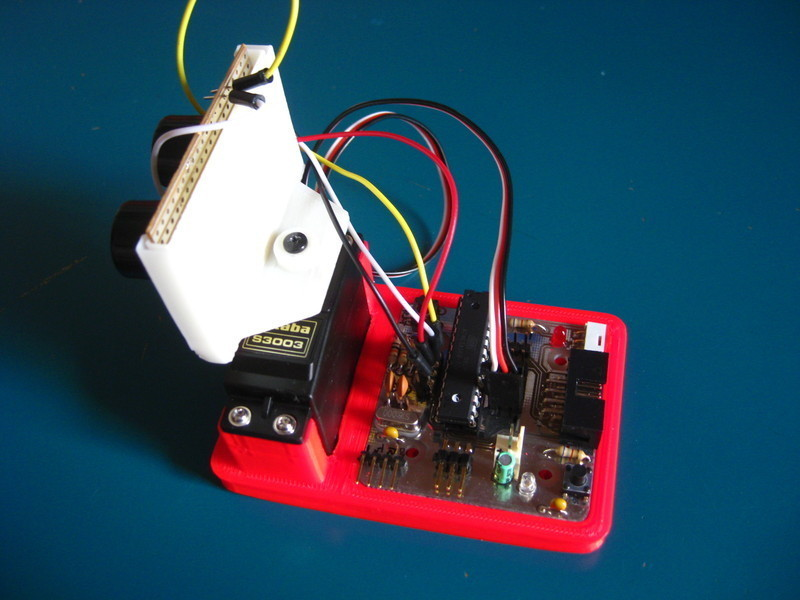
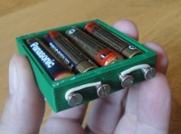
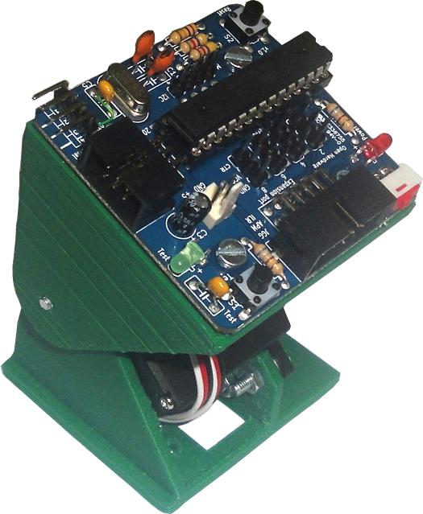
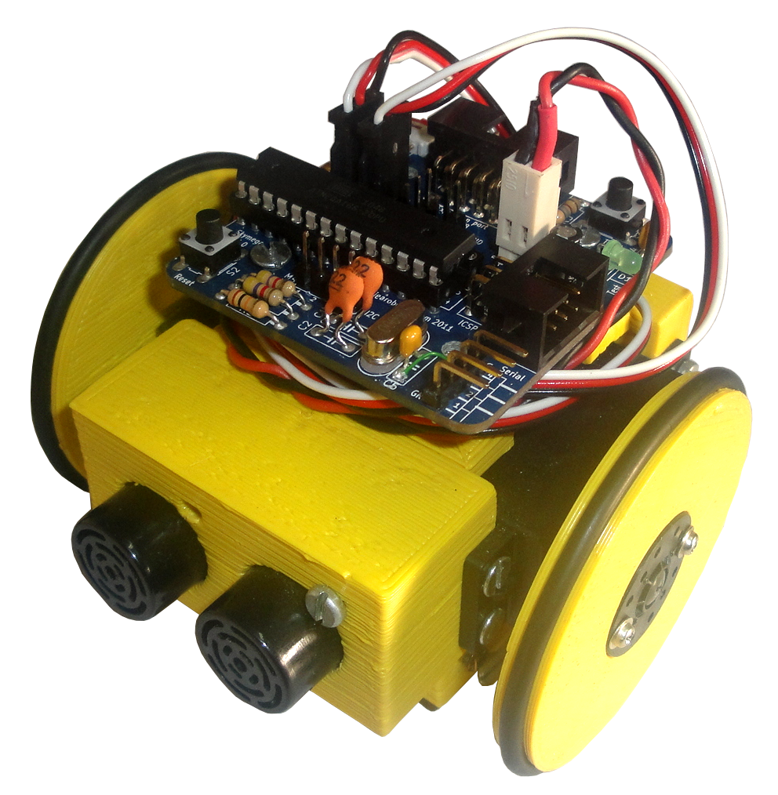
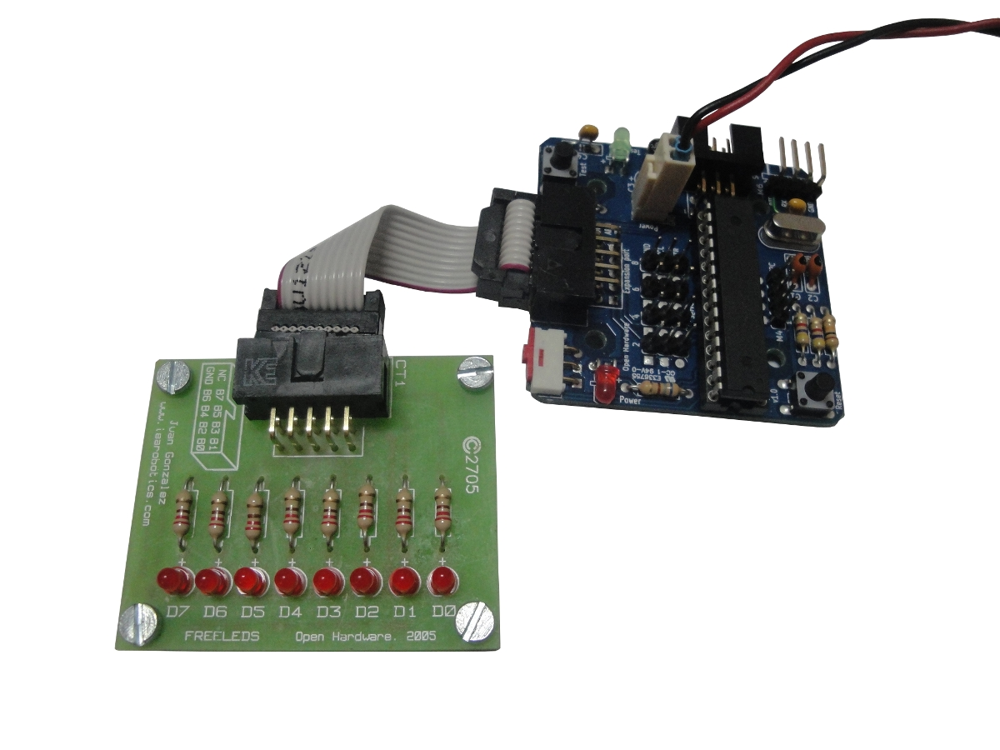
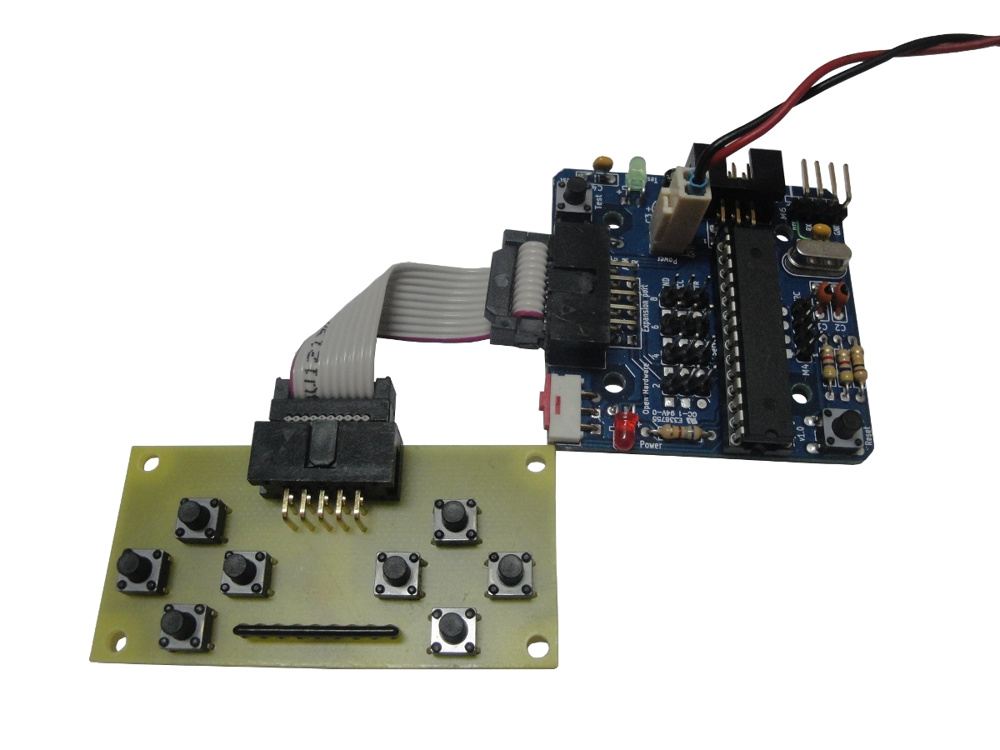
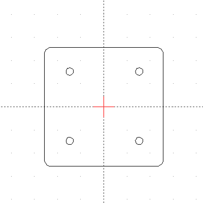
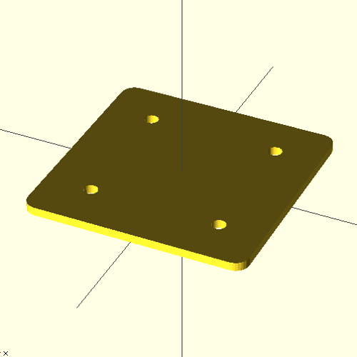
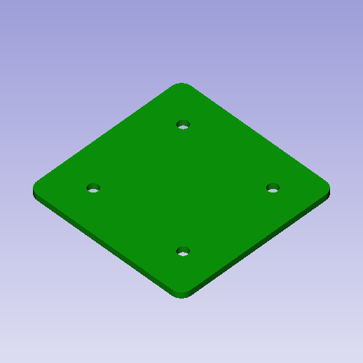

SkyMega
{kind=link}
Contenido
[ocultar]- 1 Introducción
- 2 Características
- 3 Fotos
- 4 Conexión al PC
- 5 Descripción de elementos
- 6 Alimentación
- 7 Conexión de servos
- 8 Accesorios imprimibles
- 9 Periféricos
- 10 Grabación del Bootloader
- 11 Probando la placa: "Hola mundo"
- 12 Ejemplos de programación
- 13 Programación Avanzada
- 14 Planos
- 15 Repositorio
- 16 Historia
- 17 Autores
- 18 Licencia
- 19 Enlaces
- 20 Noticias
Introducción
Tarjeta microcontroladora de reducidas dimensiones compatible con los Módulos Y1 / MY1 / REPY1. Las aplicaciones principales son la programación de robots modulares, robots móviles como el Miniskybot (o derivados) o bien para usos educaciones.
La tarjeta Skymega es hardware libre2. Ha sido diseñado con la herramienta libre Kicad. También es compatible con Arduino.

Características
- Hardware libre2
- Compatible mecánicamente con la tarjeta Skycube
- Compatible con Arduino
- Microprocesador: ATMEGA a 16Mhz. Modelos: 88/168/328
- Conexión de hasta 8 servos (8 módulos).
- Los conectores de los servos se pueden poner por ambas caras de la placa
- Comunicación por bus I2C entre tarjetas skymega
- Hasta 2 conectores de I2C, que se pueden soldar por ambas caras
- Conector de alimentación doble, tipo molex, uno por cada cara
- Conector de grabación ICSP
- Led de pruebas
- Pulsador de pruebas
- Micro-interruptor de on/off
- Led de power-on
- Slot de expansión para conectar sensores
Fotos
| Álbum de fotos en google+ |
|---|
{kind=link}
{kind=link}
{kind=link}
{kind=link}
Conexión al PC
La skymega se conecta al PC a través de un cable USB-serie de FTDI (modelo TTL-232R-5V). Este cable tiene un conector de 6 pines. Para usarlo con la Skymega es necesario modifica este conector y sustituirlo por uno de 4 pines como se muestra en las fotos. Opcionalmente, si no se dispone del conector de 4 pines, se puede reutilizar el de 6, colocando los cables como se indica en las fotos y sin conectar los 2 hilos sobrantes.
Este cable sirve para descargar firmware en la Skymega, así como comunicarse vía puerto serie con ella.
{kind=link}
{kind=link}
{kind=link}
{kind=link}
Descripción de elementos
Partes
{kind=link}
{kind=link}
Pines
{kind=link}
Alimentación
La Skymega se alimenta con un voltaje entre 4.5v y 6v. Es necesario crear un cable con un conector molex de 2 vías para alimentarla. Existen varias posibilidades:
- Utilizar un portapilas, con el conector molex
- Crear un cable USB-molex para alimentarla directamente desde el PC
- Utilizar cualquier fuente de alimentación externa con un conector molex
{kind=link}
{kind=link}
{kind=link}
{kind=link}
{kind=link}
{kind=link}
Conexión de servos
Los servos tiene 3 cables:
- Negro: Masa (GND)
- Rojo: Alimentación (VCC)
- Blanco: Señal de control (CTL)
Los servos se conectan con la orientación mostrada en las fotos
{kind=link}
{kind=link}
{kind=link}
Accesorios imprimibles
| Sonar device | Portapilas | Módulos REPY1 | Mini-Skybot |
|---|---|---|---|
|  |
 |
 |
 |
Periféricos
| Tarjeta Freeleds | Tarjeta Skypads |
|---|---|
|  |
 |
- Tarjeta Freeleds: Placa con 8 leds para hacer pruebas
- Tarjeta Skypads: Placa con 8 pulsadores simulando un "gamepad"
Grabación del Bootloader
Para poder utilizar la tarjeta skymega normalmente, es necesario grabar un bootloader. Esta operación sólo hay que realizarla una vez por cada nuevo micro ATMEGA que se coloque en la placa. Por ello, si ya nos lo han grabado, no es necesario comprar ningún programador adicional.
Para grabar el bootloader en micros nuevos, se necesita disponer de un programador de AVRs. Existen muchos modelos. Uno de ellos es el USBtinyISP, que es totalmente libre.
Grabador USBtinyISP
{kind=link}
{kind=link}
Para grabar el bootloader seguir los siguientes pasos:
- Conectar el grabador USBtinyISP al PC (USB) y a la tarjeta Skymega. El led rojo de power on se deberá encender
- Arrancar el entorno de Arduino.
 ¡¡Es necesario hacerlo como super usuario!!. Aparecerá una ventana como la mostrada en la Figura 1.
¡¡Es necesario hacerlo como super usuario!!. Aparecerá una ventana como la mostrada en la Figura 1.
$ sudo arduino
- Seleccionar la placa en Tools/Board (Figura 2). Dependiendo del micro ATMEGA que se tengo, se deberá seleccionar una de estas dos opciones:
- skymega con micro ATMEGA 328 -> Opción: Arduino Duemilanove or Nano w/ ATmega328
- skymega con micro ATMEGA 168 -> Opción: Arduino Diecimila, Duemilanove or Nano w/ ATmega168
{kind=link}
{kind=link}
- Grabar el bootloader. Opción Tools/Burn Bootloader/ USBtinyISP (Figura 3). Se empezará a grabar el bootloader. En la parte inferior aparecerá el mensaje "Burning bootloader to I/O Board (this may take a minute)" (Figura 4). Al cabo de un minuto aproximadamente habrá finalizado y si todo ha ido bien aparecerá el mensaje: "Done burning bootloader". ¡La placa está lista! :-)
{kind=link}
{kind=link}
Mensajes de error
- Error 1: "avrdude: initialization failed, rc=-1. Double check connections and try again...". Este error se produce en alguno de los casos siguiente:
- Grabador no conectado a la Skymega
- El micro no está puesto en el zócalo
- El micro está en el zócalo pero no está apretado bien, por lo que algunas patas no hacen contacto
- El micro está puesto en el zócalo... ¡Pero con la orientación incorrecta!
- El micro es defectuoso
- Error 2: "avrdude: Error: Could not find USBtiny device...". Se produce si el grabador no está conectado
- Error 3: "avrdude: error: usbtiny_transmit: error sending control message: Operation not permitted". Has olvidado arrancar el entorno arduino como Súper-usuario :-)
{kind=link}
{kind=link}
{kind=link}
Probando la placa: "Hola mundo"
Para probar la skymega por primera vez, seguir los siguientes pasos:
Pasos a seguir
- El bootloader debe estar grabado
- Alimentar la skymega, conectando bien el portapilas o el cable de alimentación USB.
- Encender la placa con el interruptor. El led rojo se encenderá
- Enchufar el cable de descarga (FTDI) al PC y conectarlo a la Skymega
- Ejecutar el entorno de arduino
- Seleccionar la placa en Tools/Board (Figura 2). Dependiendo del micro ATMEGA que se tengo, se deberá seleccionar una de estas dos opciones:
- skymega con micro ATMEGA 328 -> Opción: Arduino Duemilanove or Nano w/ ATmega328
- skymega con micro ATMEGA 168 -> Opción: Arduino Diecimila, Duemilanove or Nano w/ ATmega168
- Seleccionar el puerto serie en Tools/Serial Port. En Linux típicamente será el /dev/ttyUSB0 (Figura 3)
- Abrir el ejemplo "hola mundo". Pinchar en File/Examples/1.Basic y seleccionar Blink (Figura 4).
{kind=link}
{kind=link}
- Se abrirá una nueva ventana con el código del ejemplo (Figura 5);
- Descargar en la skymega. Pinchar el icono correspondiente (Figura 6) o la opción File/Upload to I/O Board. El programa se compilará y empezará a descargarse. Al cabo de unos segundos se podrá ver cómo el led verde de la skymega parpadea.
{kind=link}
{kind=link}
Errores
- Error 1: "avrdude: stk500_recv(): programmer is not responding". Se debe a alguna de las siguientes causas:
- El cable de descarga no está conectado a la Skymega
- El cable de descarga no está correctamente conectado (comprobar que esté con la orientación correcta)
- La skymega no está alimentada
- La skymega no está encendida. Darle al interrupción de ON
{kind=link}
Ejemplos de programación
Recursos
| skymega.h | Asignación de pines y definiciones para la tarjeta Skymega. Instalar en sketches/libraries/skymega |
Básicos
| TestLed.pde | Ejemplo "hola mundo". Hacer que parpadee el led de la Skymega |
| TestButton.pde | Ejemplo de prueba del pulsador de Test de la skymega. Al apretarlo se enciende el led |
| blink_button.pde | Hacer parpadear el led. Cuando se pulsa el botón de pruebas se incrementa la frecuencia |
Freeleds
| Test_freeleds.pde | Ejemplo de programación de la Freeleds. Se reproduce la secuencia del "coche fantástico" |
| Freeleds_binary.pde | Mostrar números en la Freeleds (en binario) |
| Freeleds_counter.pde | Contador binario en la Freeleds |
| Freeleds_manual_counter.pde | Contador binario en la Freeleds, que se incrementa con cada pulsación del botón de pruebas |
Skypads
| Test_skypads.pde | Ejemplo de programación de la Skypads. El estado de los botones se envía por el puerto serie |
| skypads_servos.pde | Control de 4 servos utilizando la Skypads (¡Muy adictivo!) |
Servos
| Servo_90.pde | Posicionamiento de los servos a 90 grados. Se utiliza para calibrar los módulos REPY1 |
| Servo_2pos.pde | Generación de una secuencia de movimiento de 2 posiciones para los 4 servos |
| Servo_seq.pde | Generación de secuencias de movimiento de n posiciones, para los 4 servos. Se pasa a la siguiente posición bien porque ha transcurrido un tiempo o bien porque se pulse el botón de test |
| Servo_button.pde | Movimiento de los servos con el pulsador de Test. Al apretarlo se incrementa la posición de los servos. Al alcanzar los límites se cambia el sentido |
Osciladores
| Oscillator.cpp | Oscillator.h | Librería Oscillator. Generar oscilaciones sinusoidales en los servos. Copiar en sketchbook/libraries/Oscillator |
| Oscillator_test1.pde | Prueba de osciladores. Ejemplo de uso (necesario skymega.h) |
| Oscillator4.pde | Producir oscilaciones en los servos con la misma amplitud, offset, periodo y diferencia de fase fija. Es la base para generar secuencias de movimiento en robots modulares (necesario skymega.h) |
Robots modulares
| Worm.cpp | Worm.h | Librería Worm. Locomoción de gusanos modulares (en una dimensión). Copiar en sketchbook/libraries/Worm |
| Worm_test.pde | Ejemplo de uso 1. Locomoción de un gusano de 2 módulos |
| Worm_wave.pde | Ejemplo de uso 2. Locomoción de un gusano de 4 módulos usando el concepto "waves" |
| Worm_wave_auto.pde |
Ejemplo de uso 3. Mismo ejemplo que Worm_wave pero el robot cambia el modo de caminar al apretar el pulsador de pruebas o bien si transcurren 10 segundos. |
Programación Avanzada
Planos
| |
- Ficheros FUENTE y de fabricación:
| skymega-1.0-src.zip | Ficheros fuentes para Kicad: Esquemas, librerias y PCB |
| skymega-v1.0-gerber.zip | Ficheros para su fabricación: Gerbers y plano de taladros |
- Ficheros con documentación en PDF:
| skymega-v1.0-sch.pdf | Esquema |
| skymega-v1.0-Back.pdf | PCB. Cara inferior |
| skymega-v1.0-Front.pdf | PCB. Cara superior |
| skymega-v1.0-SilkS_Front.pdf | Serigrafías cara superior |
| skymega-v1.0-SilkS_Back.pdf | Serigrafías cara inferior |
| skymega-v1.0-components-es.pdf | Listado de componentes |
- Planos mecánicos
| skymega-dimensions.pdf | PDF con la placa acotada. Dimensiones y situación de los taladros |
|  |
 |
 |
| DXF | OpenScad | STL |
{kind=link}
{kind=link}
{kind=link}
Repositorio
- Repositorio SVN: http://svn.iearobotics.com/skycube-mega
Historia
- 07/Dic/2011: La skymega se menciona en este blog
- 02/Dic/2011:
- Terminada la documentación de la Skymega (Blog)
- Creada una página en Thingiverse para compartirla con la comunidad
- 17/Nov/2011: Repartidos 40 PCBs entre los estudiantes de la UC3M para que las monten
- 03/Agosto/2011: Montaje de 50 skymegas finalizado
- 20/Junio/2011: Recibido el primer lote de 100 PCBs. Montadas y probadas 3 prototipos (Blog)
- 29/Mayo/2011: Encargados 100 PCBs en pcbcart. Tardarán unas 3 semanas. Se espera recibirlos la semana del 20 de Junio
- 16/Mayo/2011: Fabricados 8 PCBs prototipos en la ETSI de Telecomunicación (UPM). Montada y probada!! (Blog)
{kind=link}
{kind=link}
- 07/Mayo/2011: Cambio de nombre. La placa ha sido bautizada como Skymega, en vez de Skycube-mega.
- 14/Abril/2011: Itziar Lima ha hecho un nuevo esquema y ha soldado un prototipo. Está validado
{kind=link}
{kind=link}
- 30/Mayo/2010: Construido prototipo I. Probado con la locomoción de Minicube-I (Blog)
| 300|250</youtube> Skycube-mega prototipo 1: Ejemplo de locomoción |
{kind=link}
{kind=link}
{kind=link}
- 27/Mayo/2010: Prototipo preliminar. Placa protoboard con un Arduino nano (Blog)
| 300|250</youtube> Prototipo preliminar: Oscilación de un módulo MY1 |
{kind=link}
Autores
- Juan González-Gómez
- Andrés Prieto-Moreno
- Itziar Lima
- Ricardo Gómez
Licencia

|
Open Source Hardware Definition v1.0 |
Enlaces
- La Skymega en Thingiverse
- Grabador de AVRs:USBtinyISP v2.0
- Documentación: Hoja de datos del Atmel ATmega 168
- Documentación: AVR-libc
Noticias
- 22/Feb/2012: Añadido fichero PDF con las dimensiones de la placa y posición de los taladros
- 02/Dic/2011: Añadida documentación de la placa y ejemplos de programación
- 21/Junio/2011: Añadidas fotos de la versión 1.0
- 29/Mayo/2011: Añadidas fotos del PCB prototipo
- 7/Mayo/2011: Añadido fotos del prototipo de Itziar Lima
- 27/Mayo/2010: Comenzada esta página